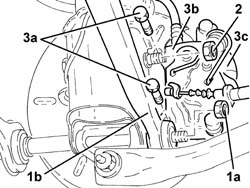
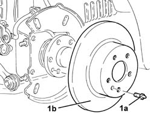
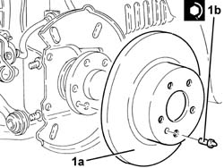
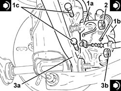

3310B48 rear brake disc - r r
- Path
- Procedures > 33 BRAKING SYSTEM > 3310 DISC BRAKES > 3310B REAR DISC BRAKES > 3310B48 rear brake disc - r r
- Kind
- repair procedure (removal / refitting; the operation number is the code)
- Applies to
- all engines; all production periods
- Interactive page
- https://sloeber94.github.io/elrnDB-a147/en/#/3025206
Applies to: all engines; all production periods
 Removing
Removing
 Refitting
RefittingPosition the vehicle on the ramp.
Proceed with the removal 4450B11 WHEEL (one) rear - R.R. .
1. Undo the nut (1a) on the bolt and move the front rear suspension front trailing arm (1b) as much as necessary.
2. Undo the nut on the top bolt securing the shock absorber to the hub vertical link.
3. Undo the bolts (3a), move the bracket (3b) complete with rear brake caliper (3c) after releasing the flexible pipe from the attachment on the shock absorber, then secure it appropriately.

Applies to: all engines; all production periods
1. Undo the bolt (1a) and remove the rear brake disc (1b).

Applies to: all engines; all production periods
Refitting
Removing1. Refit the rear brake disc (1a) in its seating and fix it tightening the bolt (1b) to the specified torque.
 | Fastening | Component | Ø | Value (daNm) |
|---|---|---|---|---|
1b | Pin | FRONT BRAKE DISC. | M8 | (Wheel hub side) 1.0 ÷ 1.4 |

Applies to: all engines; all production periods
1. Refit the bracket (1a) in its seating complete with rear brake caliper (1b) and tighten the bolts (1c) to the specified torque.
| Fastening | Component | Ø | Value (daNm) |
|---|---|---|---|---|
1c | Bolt | REAR BRAKE CALIPER BRACKET | M10 | (Rear wheel hub stub axle side.) 4.5 ÷ 5.5 |
Fix the brake caliper flexible pipe to the shock absorber.
2. Tighten the nut on the top bolt securing the shock absorber to the hub vertical link to the specified torque.
| Fastening | Component | Ø | Value (daNm) |
|---|---|---|---|---|
2 | Bolt | REAR DAMPER | M12 | (Rear wheel hub stub axle side.) 11.1 ÷ 13.5 |
3. Refit in its seating the rear suspension front trailing arm (3a) and tighten the nut (3b) to the recommended torque.
| Fastening | Component | Ø | Value (daNm) |
|---|---|---|---|---|
3b | Bolt | REAR SUSPENSION FRONT WISHBONES | M12 | (Rear wheel hub stub axle side.) 11.1 ÷ 13.5 |

Applies to: all engines; all production periods
Proceed with the refitting 4450B11 WHEEL (one) rear - R.R. .
Remove the car from the ramp.